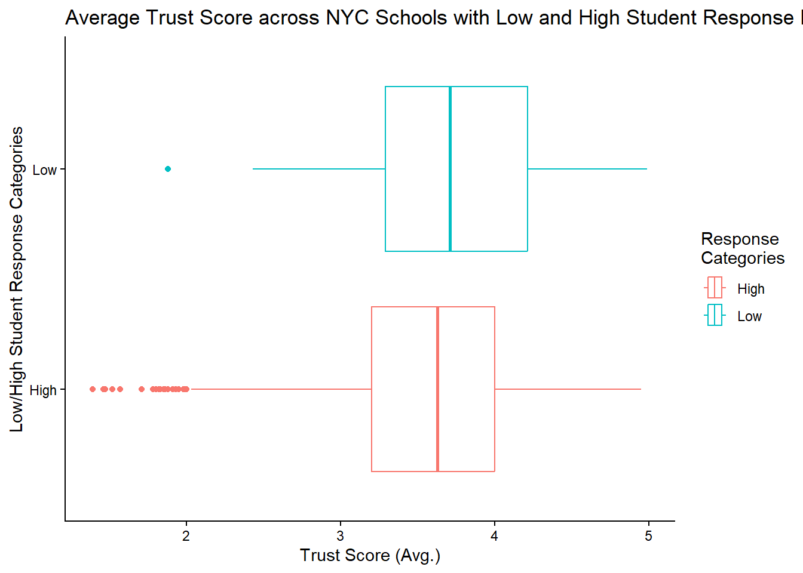

ggplot(nycschools, aes(x = ___________________________________,
y = ___________________________________,
color = ___________________________________)) +
________________()Midterm: Study Guide
SDS 192: Introduction to Data Science
Introduction
The midterm (i.e. exam #1) will be given out during the self-scheduled exam times provided by the Clark Science Center during the weekend of 11/1. You will have 75 minutes to complete the exam and you may bring a one-page cheatsheet to the exam along with a calculator and writing utensil.
Expect the exam to contain mostly free-response questions, with occasional multiple-choice/matching parts sprinkled in there. With the free-response questions, expect there to be 3-5 parts per question. Each question will revolve around some dataset or situation. To that end, expect around 4-5 questions in the exam itself.
As mentioned earlier, the exam will be taken on your own time during the weekend of November 1st (either 10/31, 11/1, or 11/2). More details about the times, as well as the layout, can be seen here.
Topics
The topics that will be covered are the following:
- Data basics
- Reading data documentation
- Values (e.g. units of observation, types of variables)
- Parts of a data frame (e.g. rows, columns, headers)
- Missing data
- Data visualization
- Use of appropriate variables for plot aesthetics
- Adjustment of plot attributes
- Scales, facets, and themes
- Dealing with overplotting
- Color palettes
- Graphical integrity (e.g. lie factor, data-to-ink ratio)
- Proper use of
ggplot2 - Analysis tools (e.g. measures of spread/center, summary tables)
- Recognizing and using different types of plots
- GitHub
gitvocabulary- Parts of a collaborative GitHub workflow
- Addressing and resolving push/pull errors
- File organization
- Data Wrangling
- Six data wrangling verbs
- Five join functions (and when to use them)
- Problem solving
- R
- Use of
ggplot2anddplyr - Types of data in R (e.g. doubles, logicals, characters)
- Basic statistics (e.g. mean, median)
- Operators (e.g. piping, assignment, relational)
- Use of
- Ethics
- Basic principles
- Impacts of unresolved ethics
- Impacts of AI
Exam Rules
- You have 75 minutes to complete this exam.
- You are allowed only one 8.5 by 11 inch sheet of notes, front and back.
- No computers, cellphones, or other internet-connected devices. This exam is closed-note and to be individually completed.
- Give your best effort and attempt every question, laying out your thought-process for questions/parts that may be ambiguous for you. Partial credit may be awarded.
Dataset and Metadata for Practice Questions
The nycschools dataset contains 1,829 observations of 11 variables, with the following information for each of the variables:
dbn: district borough numberschool_name: name of schooltotal_parent_response_rate: response rate from parentstotal_teacher_response_rate: response rate from teacherstotal_student_response_rate: response rate from studentscollaborative_teachers_score: average of responses for collaboration from 1-5effective_school_leadership: average of responses for effective school leadership from 1-5rigorous_instruction_score: average of responses for rigorous instruction from 1-5supportive_environment_score: average of responses for a supportive environment from 1-5strong_family_community_ties: average of responses for strong community ties from 1-5trust_score: average of responses for overall trust from 1-5
From the NYC Department of Education:
Every year, all parents, all teachers, and students in grades 6 - 12 take the NYC School Survey. The survey ranks among the largest surveys of any kind ever conducted nationally. Survey results provide insight into a school’s learning environment and contribute a measure of diversification that goes beyond test scores on the Progress Report. NYC School Survey results contribute 10% - 15% of a school’s Progress Report grade (the exact contribution to the Progress Report is dependent on school type). Survey questions assess the community’s opinions on academic expectations, communication, engagement, and safety and respect. School leaders can use survey results to better understand their own school’s strengths and target areas for improvement.
The NYC School Survey helps school leaders understand what key members of the school community say about the learning environment at each school. The information captured by the survey is designed to support a dialogue among all members of the school community about how to make the school a better place to learn.
Practice Questions
1. Answer the following parts in regard to the nycschools dataset.
Given the context of the data, provide an example of an ordinal that could be included in the dataset.
There are values labeled as
-999in the dataset, indicating a missing value. Describe how we would handle these missing values.A data analyst wants to remove any data from neighborhoods they deem as “unimportant” despite preparing an analysis about the state of all K-12 schools in NYC. In 1-2 sentences, discuss the ethical implications of these actions.
Suppose we want to include data about the demographic makeup of the school’s student body to the analysis. Assuming we also have the
school_namein this additional data frame, describe how we can combine this data into our current data.
2. Answer the following parts in regard to the nycschools dataset.
Suppose we want to look at schools with a trust score over 3.5, create a new column that assigns
lowto schools with a student response rate less than 50% andhighotherwise, and order schools in alphabetical order. Write pseudo-code or code, using the appropriate variables and functions/tasks, to generate these results.Suppose I want to build a scatter plot that shows the average teacher response rate against the average student response rate, with the trust score color coded. Fill in the blanks to generate the basic plot.
- Continuing off the code from the last part, develop a descriptive title and labels for the plot.
labs(title = "________________________________________________________",
x = "________________________________________________________",
y = "________________________________________________________",
color = "________________________________________________________")The next three parts will center around this particular graph:

- Identify which variables correspond to each of the three aesthetics in this chart.
- Provide 1-2 sentences that summarize the results from this chart, using at least one statistic/metric approximately.
- Describe one way using pseudocode/code that we can change the colors for the following categories.